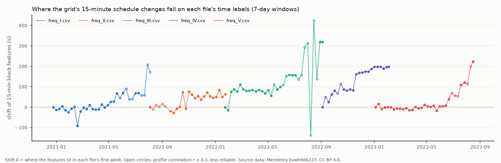
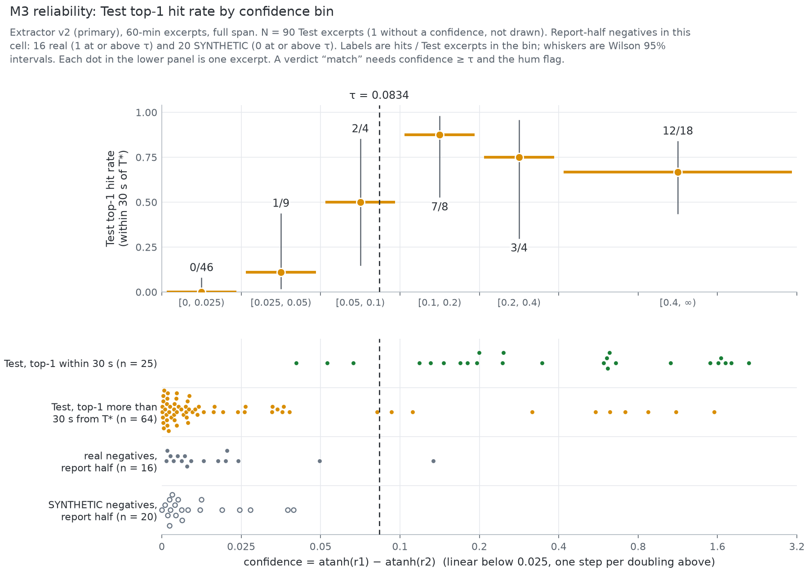

JSS University, Noida, India · GitHub: satanrayshe
Code, protocol and results: https://github.com/satanrayshe/gunj · Explorer: https://satanrayshe.github.io/gunj/
Entry to {{r:Threws Odyssey 2026, Cybersecurity track}}. Test results as of the scoring run of {{eval_written}}.
Abstract. Mains hum in a recording follows the frequency of the power grid, and India runs one synchronous grid. Gunj extracts a {{p:1-Hz trace}} of the electric network frequency (ENF) from audio and searches a public one-second log of Indian grid frequency ({{ref_span}}) for the start time that fits. The log's own time labels drift late by up to {{drift_max}}, and Gunj corrects each recording with a drift estimate measured against the grid's {{p:15-minute}} scheduling clock. In a pre-registered, blind evaluation on public livestreams of Indian institutions, {{harvest_abstract}}. For {{p:60-min}} excerpts searched over the whole log, the top candidate started within {{p:30 s}} of the expected time for {{primary_prose}}, and for {{d0_short}} without the drift correction. Gunj gave a confident verdict on {{conf_n}} of these excerpts, {{conf_w30}} of them within {{p:30 s}} and {{conf_wrong}} further off, and {{fm_real_short}} real foreign {{p:50 Hz}} recordings reached its threshold.
Keywords: electric network frequency · audio forensics · timestamp verification · pre-registration · India
Recordings of public events are often shared again long after they were made, and the metadata that could show when a recording was made can be removed or edited. Mains hum offers a physical timestamp: the frequency of an AC grid wanders around its nominal value as load and generation change (standard deviation {{ref_std_mhz}} around {{p:50 Hz}} in the log used here), a recorder near mains wiring picks up hum at that frequency, and on one synchronous grid the wander is the same everywhere. Matching the frequency trace of a recording against a log of grid frequency can therefore date the recording, which is the ENF criterion of forensic audio analysis {{cite:grigoras2005}}.
India runs one synchronous grid, and a one-second log of its frequency is published under an open licence {{cite:mendeley}}. This paper describes Gunj, an open implementation of ENF dating against that log, with four contributions: (i) a reference series built from the published files, with its gaps mapped; (ii) the finding that the log's time labels drift by minutes, with a per-recording correction measured against the grid's {{p:15-minute}} scheduling clock (Sections {{sec:data}} and {{sec:method}}); (iii) a blind evaluation on public livestreams of Indian institutions, fixed before any Test audio existed and reporting every selected stream (Sections {{sec:protocol}} and {{sec:results}}); (iv) a record of every change to that plan (Section {{sec:deviations}}). Gunj says “no verdict” when a recording has no hum or its confidence is below a threshold fixed in advance, and it reports time and grid only.
Grigoras {{cite:grigoras2005}} introduced the ENF criterion for authenticating and dating digital audio against a database of grid frequency. Huijbregtse and Geradts {{cite:huijbregtse2009}} studied the dating of short recordings with correlation-coefficient matching, and Rodríguez, Apolinário and Biscainho {{cite:rodriguez2010}} located edits from discontinuities in the ENF phase. Hajj-Ahmad, Garg and Wu {{cite:hajjahmad2013}} combined the estimates of several harmonics, each weighted by its local signal-to-noise ratio, as Gunj's v2 extractor does frame by frame. Garg et al. {{cite:garg2013}} recovered ENF from video through the flicker of mains lighting. Hajj-Ahmad et al. {{cite:hajjahmad2015}} identified the grid of a recording without a concurrent reference, a location-of-recording task that the {{r:IEEE Signal Processing Cup 2016}} also set {{cite:spcup2016}}, and Kim, Jeon and Yoon {{cite:kim2017}} built a national-scale ENF map from online multimedia streams. Open tools such as libhum {{cite:libhum}} and hum-catcher {{cite:humcatcher}} match a trace against a grid-frequency reference that the user supplies. In a {{r:search on 5 Nov 2026}} we did not find an evaluation of ENF dating against an Indian grid log. Gunj adds an open Indian reference that can be rebuilt from the published files, the label-drift correction, and a pre-registered blind evaluation with a “no verdict” outcome; it has not been compared with another ENF tool, because the planned libhum baseline was not run (Section {{sec:deviations}}).

The reference is {{p:Mendeley Data dataset bvwh9d6227}} {{cite:mendeley}}: one-second frequency from a phasor measurement unit (PMU) of Grid-India's North-Eastern Regional Load Dispatch Centre, shared by IIT Guwahati under {{p:CC BY 4.0}}. Its {{n_ref_files}} CSV files were merged into one series that runs from {{ref_t0}} to {{ref_t1}} IST: {{ref_seconds}} ({{ref_days}}), of which {{ref_valid_pct}} are valid. {{ref_gaps}}
The time labels of the dataset are not consistent. Where consecutive files overlap, they hold the same values under labels {{overlap_offsets}} apart, and inside each file the labels drift late in steps. We measured the drift against the grid's {{p:15-minute}} scheduling clock: frequency changes faster just after each block boundary, so folding the absolute second-to-second change on {{r:time mod 900 s}} gives a profile whose peak moves when the labels drift (Fig. {{fig:drift}}). Relative to its first week, which the check assumes to be on time, each file runs late by {{drift_last}} at its end (files I to V), and {{drift_agree}}.
Candidate streams were found from public YouTube metadata alone, before any audio existed: {{cand_india}} and {{cand_foreign}} on {{p:50 Hz}} grids. Court channels and proceedings were excluded (Section {{sec:limits}}), as were streams of {{p:11.5 h or longer}}, which may have hit YouTube's archive length cap ({{excl_archive}} removed), and any stream for which {{p:less than 90% of the reference seconds over its whole span are valid}} ({{excl_coverage}} removed). One seeded draw (seed {{seed}}) from the {{n_eligible}} formed a Dev split of {{n_dev}} streams for tuning, a Calibration split of {{n_cal}} for the latency and a Test split of {{n_test}} streams from {{test_channels}} channels, {{p:at most 10 per channel}} and none overlapping in time: {{test_venues}}. The negatives are {{n_neg}} foreign {{p:50 Hz}} livestreams {{neg_countries}}, assigned alternately to a threshold half and a report half, and {{syn_items}}, also halved. Only the {{p:first 65 min}} of audio were downloaded, without sign-in or cookies, converted to {{p:1 kHz mono}}, and, apart from the Dev audio, deleted after the traces were extracted. {{harvest_sentence}}
Extractor v1 uses {{p:16 s Hann windows with a 1 s hop}} and a {{p:2^18-point FFT at 1 kHz}}. In each frame it takes a peak for each of {{p:harmonics 1 to 6}} within {{p:k·50 ± 0.15k Hz}}, refines it by quadratic interpolation and divides it by k; the harmonics are combined with weights {{p:max(median peak-to-floor − 2, 0)}}, and a {{p:5-point running median}} smooths the trace. The hum flag of a recording is set if any harmonic's {{p:median peak-to-floor ratio ≥ 3}}. Extractor v2 drops the harmonics whose median ratio is below {{v2_gate}} and weights the others in each frame by {{v2_weight_html}}, where SNR is the peak-to-floor ratio in that frame; the total weight of a frame, smoothed and normalised, also weights the correlation. {{v2_tuning}}, and it was frozen with a git tag before any Calibration, Test or negative audio was extracted, so it is the primary extractor.
The trace is compared with every position in a search scope by normalised cross-correlation computed with FFTs (weighted for v2). Windows with {{p:less than 90% valid reference seconds}} or a reference standard deviation under {{p:0.003 Hz}} are skipped, and the {{top_k}} best local peaks are kept as candidates. The confidence is the Fisher-z margin c = atanh(r1) − atanh(r2) between the top candidate and the best candidate {{p:at least 60 s from the top candidate}}. A raw correlation is a poor score on a log this long: {{best_neg}}. The verdict is “match” if the hum flag is set and c ≥ τ, where τ depends on the extractor, excerpt length and scope (Section {{sec:protocol}}), and “no verdict” otherwise. Excerpt lengths are {{p:10, 20, 40 and 60 min}}; an m-minute excerpt covers {{p:audio seconds [120, 120 + 60m)}}, is extracted on its own, and is searched over the full span of the log, over {{p:±90 days}} and over {{p:±1 day}} around the release time in IST, the last being a check of a claimed date.
The expected start of a recording on the log's labels is T* = release time (IST) + L + D, and the error e of a candidate is its implied start minus T*. A hit is {{p:|e| ≤ 30 s}}; {{p:|e| ≤ 120 s and |e| ≤ 600 s}} are reported as coarse classes and never counted as hits. D is the label drift at the stream's start, read from the clock check of the file in use after a {{p:running median over 3 windows}} and frozen in the split file before any audio existed; a stream is label-stable if the profile correlation of that window is {{p:at least 0.5}}. {{d_stats}} L is one constant delay between YouTube's release time and the first audio sample, estimated on the Calibration split only as the median offset o of the streams that lock with c ≥ τ and {{p:|o| ≤ 600 s}}. {{l_stats}}
For edit detection (M5, tested on SYNTHETIC cuts only), find_edits splits a locked trace into pieces that fit the reference at offsets {{edit_min_jump}} or more apart; a positive jump means missing audio, that is, a cut. Split points are searched at least {{edit_min_seg}} from either end of the trace, and refining a split can move it up to {{edit_refine}} closer, so a cut within {{edit_closest}} of either end cannot be found. The code uses NumPy {{cite:numpy}}, SciPy {{cite:scipy}}, pandas {{cite:pandas}} and Matplotlib {{cite:matplotlib}}; audio was fetched with yt-dlp {{cite:ytdlp}} and converted with FFmpeg {{cite:ffmpeg}}.
The plan, PROTOCOL.md in the repository, was approved and committed on {{p:7 November 2026 at 09:05 IST}} ({{r:commit 2485706}}), before any Test or negative audio existed. It fixes the splits by their SHA-256 hash, the seeds, the metrics, the hit rule, the threshold rule and a go or no-go gate, and PROTOCOL section 19 records every later change to them (Section {{sec:deviations}}).
Thresholds. τ is set for each extractor, excerpt length and scope on the threshold half of the negatives. With n trials in a cell, {{p:m = floor(0.01 n)}} and τ is the {{p:(m+1)-th largest confidence plus 0.0001}}, so that {{p:at most 1%}} of the threshold-half trials reach it; {{p:with n under 100, m = 0}}, so τ sits just above the largest negative confidence of the cell. {{tau_basis}} In the primary cell τ = {{tau_primary}}.
Blinding. τ, L and the scoring script were committed before any Test search ran ({{r:commits beadde1, 84ac47d and 6d010bb}}), and the script checks with git that they are unchanged before it reads a Test trace. Test streams were harvested in a seeded random order, so the streams harvested by any time form a random sample of the split.
Metrics. M1 is hum presence; M2 the top-1 hit rate by excerpt length and scope, with the primary endpoint M2 for v2, {{p:60-min}} excerpts and the full scope; M3 the false-match rate of the report-half negatives at τ ({{p:target at most 1%}}), with a reliability plot; M4 the excerpt length needed for {{p:90% unique locks}}, simulated with SYNTHETIC noise on real reference excerpts and read at the noise measured on the Test streams that lock; M5 edit detection on SYNTHETIC cuts of {{m5_cut_range}}; and M6 an optional live station. Every rate has a {{p:Wilson 95%}} interval {{cite:wilson1927}}; no significance test is run. Sensitivity analyses: S1 drops D, S2 keeps label-stable streams only, S3 drops the {{n_unverified}} Test streams of channels whose official status or location is uncertain, and S4 compares v1 with v2. Baselines: v1, a naive single-bin {{p:50 Hz}} extractor with its own τ, libhum, and an analytic random guess.
Gate. Work would continue only if {{p:at least 5 independent Test streams}} locked blind (a top-1 hit with c ≥ τ in the full or {{p:±90-day}} scope, at any excerpt length) and harvesting met no bot check, CAPTCHA, sign-in wall or {{p:HTTP 429}}.
All Test numbers are final, since no further download is planned, and come from the scoring run of {{eval_written}} (results/
Table {{tab:m2}} gives M2 for every cell of v2. The primary endpoint is {{primary_prose}}, the same over {{p:±90 days}}; among streams with the M1 hum flag it is {{hum_present_prose}}. {{top1_classes}} {{conf_sentence}}. {{conf_rates}}
Table {{tab:base}} compares v2 with the baselines on the same {{n_primary}} streams and gives the sensitivity analyses. {{paired_sentence}} {{rg_sentence_html}} Without the drift correction (S1) the endpoint falls to {{d0_prose}}.
{{m3_sentence}} The confidence still separates Test hits from misses (Fig. {{fig:reliability}}). {{rel_sentence}}

{{m4_pre}} The plan then reads the simulation at the noise measured on the Test streams that lock, computed as in the script that analysed the feasibility probe, which uses the plain Pearson correlation of a trace with its matched window. {{m4_readings}} This noise comes from streams that lock, so it describes recordings with usable hum. The M2 and M3 plots of every cell and the M4 plots are in results/
{{m5_sentence}} M6, the optional live station, was not run.
EXPLORATORY (post hoc). {{exploratory_sentence}}
PROTOCOL section 19 records {{n_dev_entries}} changes made after the plan, each with its time (IST), its reason and whether any Test result had been seen.
Threats to validity. The ground truth is YouTube's release time plus L and D, since no clock inside the recordings was available. D is an estimate from a statistical clock with unknown error, measured relative to each file's first week, and L rests on {{L_n_streams}}, so an offset of tens of seconds can come from any of the three or from the lock, and this evaluation cannot tell them apart. The Test streams come from institutional channels, up to {{max_per_channel}} per channel, and may share recording conditions within a channel, while the Wilson intervals treat streams as independent. The harvest order was random, but failures may cluster by channel or stream format. The negatives are few, and each τ rests on the largest threshold-half negative of its cell. The reference is a single PMU, and v2 was tuned on {{n_dev_streams}}.
The open reference ends on {{ref_t1_day}}, so Gunj cannot date a later recording; Grid-India records the frequency every second, and publishing that record would allow the same check for recent recordings. Most streams carry little usable hum (M1), and a missing hum is evidence of nothing. A confident verdict can be wrong ({{conf_wrong_of}} in the primary cell were more than {{p:30 s}} off), so it should be read with its candidate list and margin. A match dates the hum; it does not show that a recording is genuine, since anyone with the log could add a matching hum. The grid is synchronous, so the hum says nothing about where in India a recording was made, and Gunj reports time and grid only.
Court channels and proceedings were excluded, because the Gujarat High Court's live-streaming rules bar copying and derivative use of its feeds {{cite:gujarat2021}}; a title filter also screened for court terms in English and Hindi. The {{p:5 Nov feasibility probe}}, run before this rule was written, used a lecture on that court's channel and is excluded from every split and metric. Audio was downloaded only with the author's approval, only from public institutional streams and only to measure the method, without sign-in, cookies or proxies and with a stop at the first bot check. YouTube's terms restrict downloading, so each file was deleted once its traces were extracted (the audio of the {{n_dev_streams}} stays on the author's laptop for tuning), and no audio or video is in the repository, the explorer or this report. Dating a recording can reveal when someone attended an event, which is one reason the explorer shows only public institutional streams.
On public Indian livestreams, Gunj placed the top candidate within {{p:30 s}} of the expected start for {{primary_short}} excerpts of {{p:60 min}}, and for {{hum_present_short}} of those with hum. Without the correction for the log's label drift, the same endpoint was {{d0_short}}. Its confident verdicts were within {{p:30 s}} in {{conf_w30_of}} cases, and {{fm_real_short}} real foreign recordings reached the threshold.
Data and code availability. The code, the pre-registered protocol with its deviations, the {{p:1-Hz trace}}s, the raw search outputs and every result file are at https://github.com/satanrayshe/gunj, and the explorer is at https://satanrayshe.github.io/gunj/. The reference must be downloaded from Mendeley Data {{cite:mendeley}}; the SHA-256 of each file used is in results/reference_summary.md. No audio or video is published.